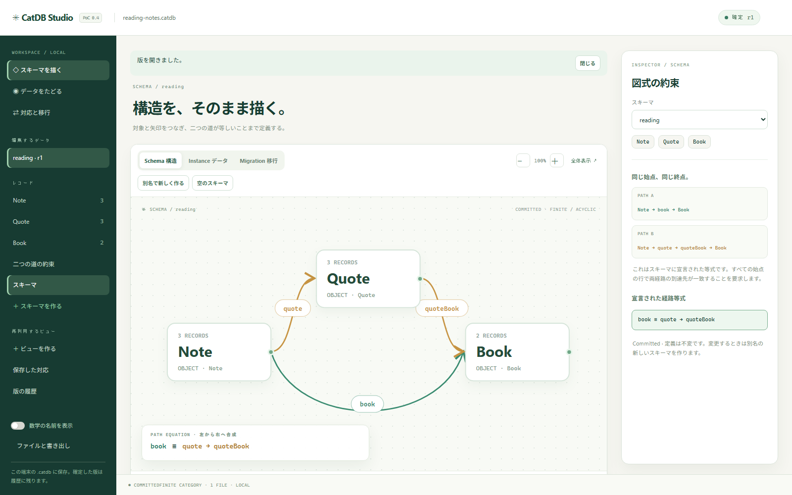

構造を明示する
スキーマを対象と矢印で記述。経路が等しくなるという約束も、検査可能な定義にします。
OPEN SOURCE / HASKELL / v0.4.0 PoC
データベースは、行や値だけでできているわけじゃない。「何と何が、どうつながるか」もデータの一部だ。
CatDBは、対象・矢印・経路の等式でスキーマを定義し、構造の対応からデータ変換を導くHaskell製の実験的DB。変換の結果だけでなく、その由来まで追いかけられます。
● 実際に動く研究用PoC。SQLiteの置き換えではありません。
F : Card ↦ Note · volume ↦ book ≡ quote ; quoteBook
なぜ「構造」を扱うのか
二つのシステムが、同じ世界を別の形で表している。そのとき必要なのは、テーブルをコピーする手順だけではありません。「どの概念が、どの概念に対応するか」という約束です。
スキーマを対象と矢印で記述。経路が等しくなるという約束も、検査可能な定義にします。
どの対象と矢印を、別の構造のどこに送るかを定義。データが偶然合うだけでは認めません。
変換後の行から、元の版と行へ。どの演算で生まれた結果かを、型付きの由来として残します。
スキーマの対応は人が宣言します。CatDBが意味を推測したり、現実世界の同一性を自動判定したりするわけではありません。
構造の対応から、三つの演算へ
CatDBは、検査済みのスキーマ対応に沿ってデータを読み直し、まとめ、整合する組を組み立てます。共通の数学的なモデルから生まれる操作です。
スキーマの対応に沿って、元のデータを新しい見方で読み直します。読書メモを「カード」として扱う。同じ本を指す二枚のメモも、勝手に一つにはなりません。
3件の入力から3枚のカード。自動的にはまとめない。
データを別の構造へ運び、矢印と対応が要求する同値関係に沿ってまとめます。結果は同値類として残り、どの元の要素からできたかを調べられます。
具体的な同値関係は検査済みの構造対応から決まります。
複数の対象の要素を選び、矢印の関係が整合する組を計算します。人と依頼が同じチームを指すとき、それは一つの候補。最良の候補を選ぶ仕組みではありません。
P1 Team A
P2 Team B
T1 Team A
T2 Team A
条件に整合する2組を列挙。割り当てを決めるものではありません。
構造は、単なる図ではない
スキーマに「直接たどる道」と「引用を経由する道」は等しいと宣言する。その約束を壊す更新は、保存前に検出できます。
これはCatDBの一つの機能。大切なのは、データの関係が検査可能な構造になっていることです。
INTERACTIVE EXPLANATION / 図解シミュレーションn1 book → b1
n1 quote → q1 → quoteBook → b1
実際に使って、確かめる
CatDB Studioは、ローカルの .catdb ファイルを開いて、スキーマ・レコード・対応・ビューを操作するGUIです。Haskell製エンジンが検査し、確定版と由来を一つのファイルに保存します。

図の対象と生成射を選び、二本の道を経路等式として定義。保存済みの定義は別名で新しく作れます。
複数の変更を下書きにまとめ、全体を検査してから原子的に保存。
Δ・Σ・Πでビューを作り、どの版の何から生まれたかを辿る。
SchemaC
DataI : C → FinSet
MappingF : C → D
v0.4.0 · Working proof of concept
CatDBは、新しいデータモデルを試し、その性質を実際に計算するための独立実装です。既存のRDBMSを置き換える完成品ではありません。
OPEN. EXPLORE. QUESTION.
まずは小さな読書メモから。スキーマを見て、行を変え、検査し、別の見方で読み直す。CatDBが考えていることは、実際に試すのがいちばん早い。
v0.4.0-poc / ZIPを展開して起動 / コンパイラー不要 / ローカルのみGUIだけではありません。ライブラリとしてスキーマ・インスタンス・対応と演算をプログラムに組み込めます。
view <- delta publicMap source
quotient <- sigma identityMap records
compatible <- piMigration matchMap items